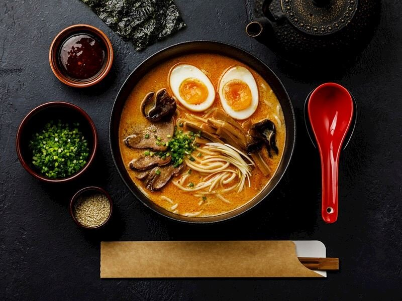

Ramen Yemeği
Malzemeler
- 400 gram tavuk
2 yemek kaşığı soya sosu
t
- 400 gram tavuk
- 400 gram tavuk
2 yemek kaşığı soya sosu
1 paket ramen (noodle da kullanabilirsiniz.)
Tarif
İlk olarak bir tencerenin içerisine 2 bardak su ve tavukları ekleyin.
Üzerine rendelenmiş zencefil, sarımsak, tuz ve yeşil soğanı da ekleyerek yaklaşık 30 dakika haşlayın.
Ardından suyun içinden haşlanan tavukları alın ve didikleyin.
Suyu süzgeçten geçirerek başka bir tencereye aktarın.
Suyun içerisine susam yağı ve soya yağını ilave edin. Bu suyu 15 dakika boyunca kaynatın.
Farklı bir tencereye 2 bardak su ekleyin ve kaynatın. Su kaynamaya başladığında içerisine ramenleri ve kabartma tozunu ekleyin.
Ramen yumuşayıncaya kadar pişirin. Ramenleri süzdükten sonra bir kabın içerisine alın.
Susam yağıyla birlikte kaynayan sudan bir kepçe alın ve ramenin üzerine dökün.
Ramenlerin üzerine haşlanmış yumurta, haşlanmış tavuk parçaları, soya filizi ve taze soğan ekleyerek servis edin. Afiyet olsun.
